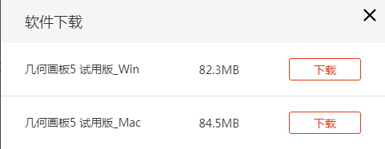
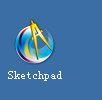
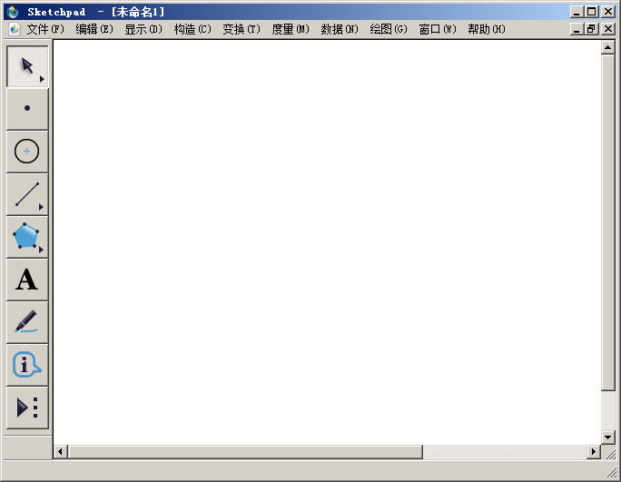
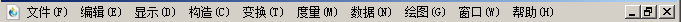
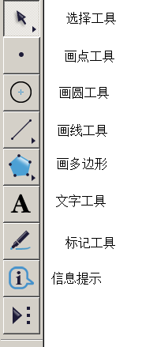
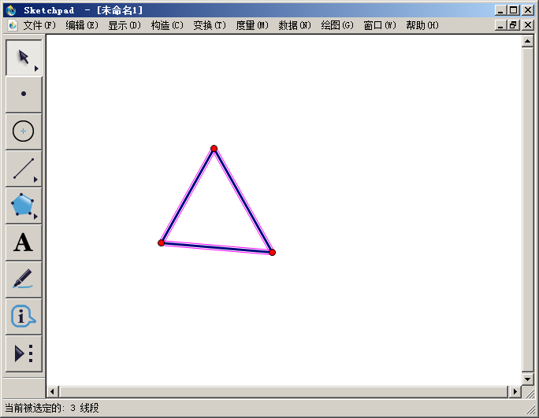
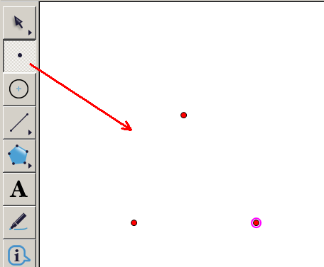
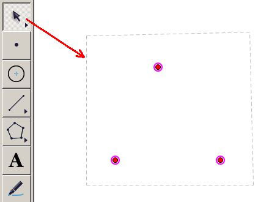
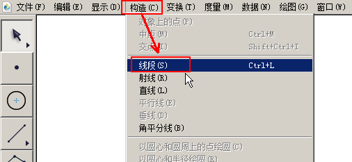
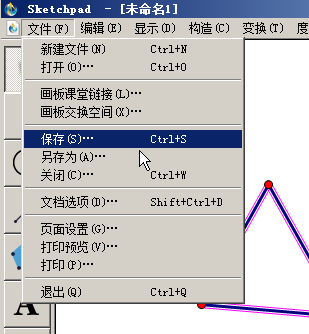

几何画板基础入门教程
作者：TeliuTe 来源：基础教程网
一、认识窗口 返回目录 下一课几何画板是一个优秀的数学作图软件，可以方便地画出几何图形；
1、安装软件
1）在浏览器中搜索，或者到官网下载试用版：https://www.jihehuaban.com.cn/

2）安装完以后，在桌面或开始菜单里，找到图标打开；

2、认识窗口
1）打开软件后，显示几何画板的窗口；

2）最上面是菜单栏，记住“构造”、“显示”、“变换”这三个常用菜单；

3）左边是工具箱，里面用常用的作图工具，画点、线、圆这些的基本图形；

4）右边是工作区，也就是作图区，使用左边的工具或“构造”命令，在这里绘制图形；

5）在左边点击“画点工具”，在右边工作区里，点三下，出现三个点，最后一个点要大一些，是选中状态；

6）在左边点击“选择工具”，在右边工作区里，画个大框，把三个点框选中；

7）在上点击“构造”菜单，选择“线段”，即用选中的点构造出线段来，画出一个三角形；

8）作好的图形，点菜单“文件 - 保存”命令，将作好的图形保存到自己的文件夹，试用版不能保存；

本节学习了几何画板窗口的基础知识，如果你成功地完成了练习，请继续学习下一课内容；
本教程由TeliuTe制作|著作权所有
基础教程网：http://teliute.org/
美丽的校园……
转载和引用本站内容，请保留作者和本站链接。